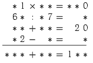
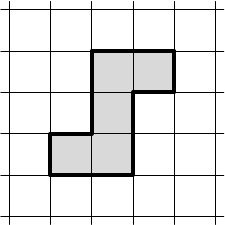
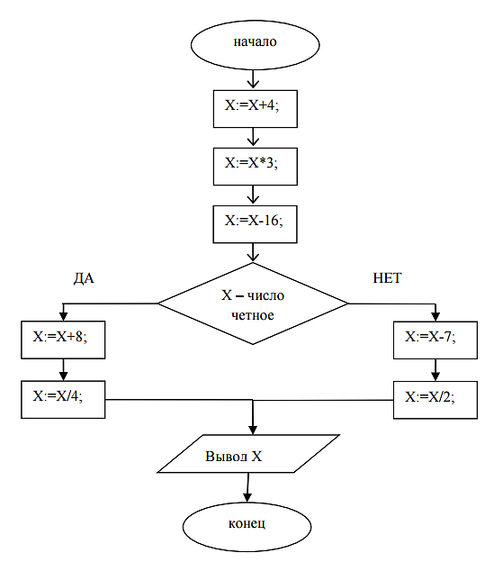

ФИЗТЕХШКОЛА ДАГЕСТАНА

О школе
Физико-техническая школа Республики Дагестан, одна из трех общереспубликанских предметных школ Республики Дагестан, создана в целях углубленного изучения предметов:
- физика;
- информатика;
- математика.
Физико-техническая школа Республики Дагестан будет функционировать в заочном и очном сегментах.
Заочный сегмент Физико-технической школы Республики Дагестан представляет собой заочную школу физико-технического профиля.
Очный сегмент Физико-технической школы Республики Дагестан планируется к открытию не позднее 2018 года в 10 опорных школах, которые будут отобраны по конкурсу, и в дальнейшем количество школ с очным сегментом Физико-технической школы будет увеличиваться.
В мае-июле 2017 года Физико-техническая школа Республики Дагестан проводит набор в 7 классы заочного сегмента учащихся, переходящих из 6-го класса в 7-й класс.
Заочный сегмент Физико-технической школы Республики Дагестан осуществляет свою работу в рамках реализации следующих образовательных программ дополнительного образования детей:
«Физика: физико-техническая школа Республики Дагестан»;
«Математика: физико-техническая школа Республики Дагестан»;
«Информатика: физико-техническая школа Республики Дагестан».
Научно-методическое руководство школой осуществляет Координационный методологический совет, состав которого утвержден приказом Министра образования и науки Республики Дагестан.
В состав Координационного методологического совета вошли представители Министерства образования и науки РД, Дагестанского государственного технического университета, Дагестанского государственного университета, Управления образования Администрации г. Махачкалы, Республиканского многопрофильного лицея, образовательных учреждений Республики Дагестан.
Обучение в школе ведётся по четырём предметам физико-технической направленности. Учащиеся могут по своему выбору изучать одну, две или три образовательные программы: «Физика: физико-техническая школа Республики Дагестан», «Математика: физико-техническая школа Республики Дагестан», «Информатика: физико-техническая школа Республики Дагестан».
Цель нашей школы - помочь учащимся 7 классов общеобразовательных учреждений, интересующимся предметами физико-технической направленности, углубить и систематизировать свои знания по этим предметам, а также способствовать их профессиональному самоопределению.
Приём на Заочный сегмент Физико-технической школы Республики Дагестан проводится на конкурсной основе по результатам выполнения вступительного задания по выбранным для изучения предметам.
Полная программа обучения рассчитана на 5 лет с 7-го по 11-й классы включительно, начать обучение в 2017 году можно с 7 класса.
В течение учебного года в соответствии с программой заочного сегмента Физико-технической школы Республики Дагестан студент будет получать по каждой теме задания по выбранным предметам, а затем рекомендуемые авторские решения либо подходы к выполнению этих заданий вместе с проверенной работой.
Количество заданий в год по классам и предметам будет опубликовано не позднее 1 июля 2017 года на официальном сайте Минобрнауки Республики Дагестан.
Задания будут содержать теоретический материал, разбор характерных примеров и решений по соответствующей теме и задания для самостоятельного решения. Это и простые задачи, и более сложные.
Задания составляют опытные специалисты в области физики, математики, информатики.
Координировать работу физико-техническая школы Республики Дагестан будет Наблюдательный совет, в состав которого войдут представители ведущих технических университетов Росси.
Задания также будут размещены на официальном сайте общереспубликанских предметных школ: учусь05.рф
Работы студентов - заочников будут проверять студенты и аспиранты университетов Республики Дагестан и лучшие учителя-предметники.
Срок отправления решения вступительного задания - не позднее 1 августа 2017 года. Проверенные вступительные работы обратно поступающему не высылаются. Решение приёмной комиссии будет выслано в сентябре 2017 года.
Вступительное задание по выбранным предметам ученик выполняет самостоятельно в одной школьной тетради на русском языке, сохраняя тот же порядок задач, что и в задании. Тетрадь нужно выслать в конверте простой бандеролью или простым письмом, или привезти в Республиканский центр научно-технического творчества учащихся по адресу: 367015, Махачкала, ул. Генерала Магомеда Омарова,д. 3.
На внутренней стороне первой обложки тетради необходимо указать следующие сведения:
- Республика, край, область ________________
- Фамилия, имя, отчество _________________________________
- Класс, в котором учитесь ____________________________
- Предметы, по которым выполнены задания _________________
- Школа, в которой Вы обучаетесь ______________________
- ФИО учителя по предмету, по которому Вы выполнили задания ________________
- Подробный домашний адрес (с указанием индекса), телефон, e-mail _________________________________ (необходимо для направления заданий)
По окончании учебного года учащиеся, успешно выполнившие программу Заочного сегмента Физико-технической школы Республики Дагестан, переводятся в следующий класс, а выпускники (11кл.) получают свидетельство об окончании школы с итоговыми оценками по изучавшимся в 11 -м классе предметам.
Обучение в Заочном сегменте Физико-технической школы Республики Дагестан бесплатное.
Контактная информация:
Тел: 89094806966 (Алиев Марат Исрапилович)
Сайт общереспубликанских предметных школ: учусь05.рф.
Экспертный совет
- Раздел на стадии заполнения -
Вступительные задания
ВСТУПИТЕЛЬНЫЕ ИСПЫТАНИЯ
ПО МАТЕМАТИКЕ
- Две фирмы купили в магазине пять ящиков яблок из имеющихся шести ящиков с массами 15, 16, 18, 19, 20 и 31 килограммов. Причём одна из фирм взяла по массе яблок в два раза больше, чем другая. Какой ящик остался в магазине?
- 30 школьников с пяти разных классов придумали 40 задач (каждую задачу придумал ровно один школьник). Любые два одноклассника придумали одинаковое число задач, а любые два школьника с разных классов — разное. Сколько школьников придумали по одной задаче?
- На Острове рыцарей и лжецов у каждого жителя есть собака. Часть жителей острова заявили, что на Острове четное число рыцарей, а остальные заявили, что на Острове нечетное число лжецов. Может ли число собак на Острове быть нечетным?
-
Расшифруйте ребус: замените звёздочки цифрами так, чтобы выполнялись равенства во всех строках, и каждое число последней строки равнялось сумме чисел столбца, под которым оно расположено.

- Требуется подключить к сети люстру с семью лампочками так, чтобы можно было зажигать любое число лампочек от одной до семи. Можно ли это сделать, используя только три выключателя? А если люстра с восемью лампочками? А с девятью?
- За контрольную работу оценки «5», «4», «3», «2» получили соответственно 28%, 35%, 25%, 12% учащихся из трех классов. Сколько учащихся писали контрольную работу?
-
Разрежьте изображённую на рисунке фигуру на три части и сложите из них квадрат.

***
ВСТУПИТЕЛЬНЫЕ ИСПЫТАНИЯ
ПО ИНФОРМАТИКЕ
Задание 1.
Считая, что каждый символ кодируется одним байтом, оцените информационный объем следующего предложения, указанного в кавычках (учитывать, что в 1 байте 8 бит; пробелы и знаки препинания тоже имеют значение):
«Выпало мало снега.»
Ответ напишите в битах.
Задание 2.
Гриша дал младшему брату деньги, научил пользоваться автоматом по продаже товаров и отправил купить упаковку натурального сока. Пока младший брат дошел до автомата с соками, он забыл порядок действий. А мы знаем, что только если в правильной последовательности выполнить действия, можно получить товар. Помогите ему купить упаковку сока. Пронумеруйте действия так, чтобы получился правильный алгоритм.
|
|
Забрать из лотка сок |
|
|
Нажать на кнопку с номером нужного сока |
|
|
Вставить деньги в купюроприемник |
|
|
Убедиться, что аппарат работает |
Задание 3.
Десятичное число 12 в двоичной системе счисления записывается как ...
В ответе запишите само число без указания системы счисления.
Задание 4.
Выберите единичное понятие из представленных ниже:
- Дом
- Дерево
- Саратов
- Река
Задание 5.
В каком отношении между собой находятся следующие два понятия - «книга» и «учебник математики»
- тождество;
- пересечение;
- подчинение;
- противоположность.
Задание 6.
Расширения .txt, .rtf, .doc имеют:
(Расширение определяет принадлежность к какому-либо типу файлов и пишется после названия файла)
- исполняемые файлы;
- текстовые файлы;
- звуковые файлы;
- графические файлы.
Задание 7.
Антон, Надя, Ахмед и Макс возвращались домой с прогулки. По дороге они наткнулись на речку, которую можно перейти по хрупкому мосту.
Антон может перейти его за минуту, Надя - за две, Ахмед - за три, Макс - за четыре.
Фонарик у них только один, и он обязательно нужен для перехода по мосту, который может выдержать только двоих. Когда двое вместе идут по мосту, то их скорость равна скорости более медленного из них.
Помогите ребятам составить алгоритм, согласно которому можно перейти мост как можно быстрее.
Какое время они затратили на его исполнение?
Задание 8.
На одной улице стоят в ряд 4 дома, в которых живут 4 человека: Семён, Николай, Артур и Роман. Известно, что каждый из них владеет ровно одной из следующих профессий: Врач, Художник, Егерь и Тренер, но неизвестно, кто какой, и неизвестно, кто в каком доме живёт. Однако известно, что:
- Врач живёт левее Егеря
- Художник живёт рядом с Тренером
- Художник живёт правее Врача
- Тренер живёт рядом с Врачом
- Артур живёт правее Тренера
- Семён живёт через дом от Николая
- Роман живёт правее Семёна
- Николай – не врач
Выясните, кто какой профессией и, кто где живёт. Дайте ответ в виде заглавных букв имени людей, в порядке слева направо. Например, если бы в домах жили (слева направо) Константин, Тарас, Руслан и Олег, ответ был бы: КТРО.
Задание 9.
У исполнителя Утроитель две команды, которым присвоены номера:
- вычти один
- умножь на три
Первая из них уменьшает число на экране на 1, вторая – утраивает его. Запишите порядок команд алгоритма так, чтобы получилось число26
из числа 5. Алгоритм должен содержать не более 5 команд. Указывайте лишь номера команд. Например, если бы надо было получить 4 из числа 2, то порядок был бы следующий: 211 (умножь на 3, вычти 1, вычти 1).
Задание 10.
Мы знаем, что цвет пикселя на экране современных устройств формируется из трех базовых цветов. Меняя интенсивность каждого из них, получаются все оттенки цветов. Какие именно цвета входят базовый набор, из которого формируются остальные:
- красный, синий, зелёный;
- красный, жёлтый, синий;
- жёлтый, голубой, пурпурный;
- красный, оранжевый, жёлтый.
Задание 11.
Полный адрес документа, хранящегося на компьютере, выглядит следующим образом: С:\Школа\Задачи\Информатика.dос.
Укажите имя файла.
Задание 12.
Сергей дома набирал доклад для выступления в классе. Когда набрал несколько слов, он заметил, что все буквы у него пишутся заглавными. Что произошло?
- Случайно нажата клавиша NumLock;
- Случайно нажата клавиша CapsLock;
- Вышел из строя компьютер;
- Сергей работает не в той программе.
Задание 13.
Мы знаем, что компьютер состоит из разных устройств. Каждый из них отвечает за различные операции. Из перечисленных ниже укажите устройство, предназначенное для передачи хранящейся в компьютере информации человеку.
- клавиатура;
- монитор;
- мышь;
Задание 14.
Выполните вычисления по блок-схеме. Начальное значение Х=7. Определите чему равно конечное значение Х.

***
ВСТУПИТЕЛЬНЫЕ ЗАДАНИЯ
ПО ФИЗИКЕ
- Диаметр мяча.У вас имеется в наличии только жесткая измерительная линейка с миллиметровыми делениями. Каким образом можно измерить диаметр футбольного мяча , используя эту линейку ?
- Молодой бамбук. За сутки молодой бамбук может вырасти на 86,4 см. На сколько он может вырасти за секунду?
- Найдите фальшивую монету. На столе лежат 9 монет. Одна из них фальшивая. Как при помощи двух взвешиваний можно найти фальшивую монету? (Фальшивая монета легче настоящих).
- Сколько мне лет? Когда моему брату был 31 год, мне было 8 лет, а теперь брат старше меня вдвое. Сколько мне лет теперь?
- Считаем ступеньки. Магомед живет на четвертом этаже, при этом, поднимаясь к себе домой, он проходит по лестнице 60 ступенек. Махач живет в этом же подъезде на втором этаже. Сколько ступенек проходит Махач , поднимаясь к себе домой на 2 этаж?
- Длинный ряд. Какой длины получился бы ряд из плотно уложенных друг к другу своими гранями кубиков, объемом 1мм3 каждый, взятых в таком количестве, сколько содержится их в 1м3?
2017/2018 учебный год
- Раздел на стадии заполнения -
Новости и события
- Раздел на стадии заполнения -
Лучшие работы
- Раздел на стадии заполнения -
Документы
- Раздел на стадии заполнения -
Контакты
Email для обратной связи: